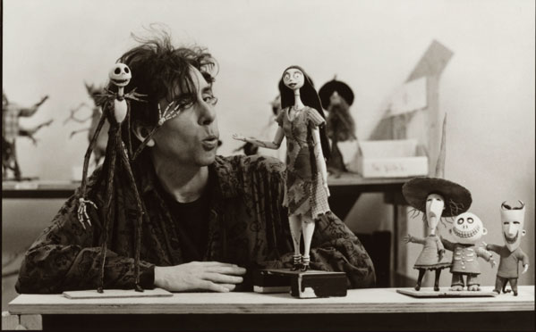

TIM BURTON, EL GENIO DE LO EXTRAÑO

Un Visionario del Cine Fantástico y Gótico
Tim Burton es un cineasta, director, productor y escritor estadounidense conocido por su estilo visual distintivo, oscuro y fantástico. A lo largo de su carrera ha fusionado elementos del cine de terror clásico con un enfoque gótico y excéntrico, creando un mundo único que combina lo extraño con lo conmovedor.
Su trabajo abarca películas icónicas como Beetlejuice , El joven manos de tijera , El extraño mundo de Jack y Alicia en el país de las maravillas. Con una carrera que abarca más de tres décadas, Burton ha colaborado con grandes actores como Johnny Depp y Helena Bonham Carter y ha trabajado en proyectos tanto de animación como de acción en vivo.
El trabajo del cineasta está marcado por su estética gótica, personajes excéntricos y paisajes surrealistas. El uso frecuente de tonos oscuros, contraste de luz y sombra, y personajes inadaptados, son sus sellos más distintivos. En esta página se pueden incluir imágenes de escenas icónicas de sus películas que muestren este estilo. Los temas que definen su trabajo incluyen la soledad, la alienación, la muerte y lo macabro, pero siempre con un toque de humor y humanidad. Sus personajes a menudo son marginados o incomprendidos, pero terminan encontrando su propio camino en el mundo.
Dentro de su historial cinematográfico podemos encontrar películas como El joven manos de tijera (1990), Beetlejuice (1988), El extraño mundo de Jack (1993), Alicia en el país de las maravillas (2010), Batman (1989), Batman regresa (1992), El cadáver de la novia (2005), Sleepy Hollow (titulada: La leyenda del jinete sin cabeza en América Latina, 1999), Sweeney Todd: El barbero diabólico de la calle Fleet (2007) y Big Fish (2003).
⇈ Autoras del sitio ⇈
⇈ Contactate con nosotras ⇈